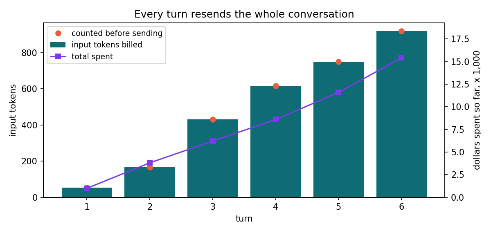

A language model reads and writes tokens, and the API states its limits and its prices in the same unit. The context window caps how many tokens one request and its reply can hold, and the bill multiplies each kind of token by its own rate. Character and word counts predict neither with any precision, so a budget starts from the counts the API reports, before the call with count_tokens and after it in usage.
Count a request before it is sent, read its usage after, and budget a conversation for its whole history on every turn.
Counting a request before it is sent
The count_tokens endpoint takes the same model, messages, system prompt and tools as
messages.create and returns the number of input tokens the request would use, without running the
model. As of November 2026 it is free to call. The notebook counted one support request written six ways, on
Claude Haiku 5.5, Sonnet 5.5 and Opus 5.5, next to a one-character request that counts 9 tokens, the fixed
overhead of a request's format.
| Payload | Characters | Input tokens | Beyond the overhead | Characters per token |
|---|---|---|---|---|
| English | 96 | 38 | 29 | 3.31 |
| JSON | 89 | 47 | 38 | 2.34 |
| CSV | 95 | 50 | 41 | 2.32 |
| Python | 125 | 48 | 39 | 3.21 |
| German | 103 | 61 | 52 | 1.98 |
| Japanese | 36 | 39 | 30 | 1.20 |
The English ticket packs 3.31 characters into each token and the Python function 3.21. Written as JSON or CSV, the same facts drop to about 2.3 characters per token, because quotes, braces, commas and field names are tokens too. The German ticket takes 52 tokens for 103 characters and the Japanese one 30 tokens for 36 characters, so a budget measured on English text undercounts other languages. All three models returned the same count for every payload, so a count taken on one of them holds for the others.
What the user types is only one component of the request. Adding the support assistant's system prompt, 16 words, raised the ticket's count from 38 to 65 tokens, and adding one tool definition with a one-field schema raised it to 439. Anthropic's pricing page lists 286 tokens for the instructions the API adds to any request that carries tools, on all three models as of November 2026, and the definition itself took about 88. Both are sent and billed on every call.
The window holds the prompt and the reply
The Models API describes each model, including max_input_tokens, its context window, and
max_tokens, the longest reply one request may generate. As of November 2026 all three models report a
window of 1,000,000 tokens and a longest reply of 128,000. The window covers the prompt and the reply together,
and the thinking a model does before its answer is part of the reply.
The API applies two rules at the edge of the window, as of November 2026. A prompt larger than the window is
rejected with a 400 error that says the prompt is too long. A prompt that fits, but leaves less room than
max_tokens asks for, is accepted, and the reply stops early if it reaches the end of the window. The
chapter's calculator applies both rules in context_check.
| Prompt tokens | max_tokens | context_check |
|---|---|---|
| 439 | 1,024 | fits |
| 900,000 | 64,000 | fits |
| 950,000 | 64,000 | may stop early |
| 1,000,001 | 1,024 | too long |
A window of a million tokens rarely binds a single question. It binds the requests that carry whole documents, long tool results or a long conversation, and the next section shows how quickly a conversation grows.
A conversation pays for its history
The Messages API keeps no state between calls, so a conversation is a list the application sends again in full on
every turn. The notebook ran six turns of a support conversation on Claude Sonnet 5.5, counting each request with
count_tokens before sending it and reading the usage the response reported.
| Turn | Counted before | Input billed | Output | Of it thinking |
|---|---|---|---|---|
| 1 | 53 | 53 | 88 | 0 |
| 2 | 166 | 166 | 249 | 103 |
| 3 | 432 | 432 | 154 | 38 |
| 4 | 617 | 617 | 115 | 0 |
| 5 | 750 | 750 | 149 | 44 |
| 6 | 919 | 919 | 200 | 0 |
The count matched the billed input exactly on all six turns. Turn 2's prompt was 113 tokens larger than turn 1's, the first reply's 88 tokens plus 25 for the second question. The second reply wrote 249 output tokens, 103 of them thinking, and the next prompt grew by 266, so the thinking came back as input on the following turn although the reply showed none of its text. The notebook passes each reply back whole, thinking block included, as the API expects.

Six turns read 2,937 input tokens and wrote 955, for 0.015424 dollars at Claude Sonnet 5.5's prices as of
November 2026. The calculator's project_conversation extends the pattern, about 173 tokens added a
turn and 159 written. Twelve turns come to 12,054 input tokens and 0.0432 dollars, nearly three times the cost of
six, and thirty turns to 76,845 input tokens and 0.2014 dollars. Total input grows with the square of the number of
turns, which is why long-running agents summarize or trim their history, the subject of Part 8, Memory and
state.
Prices turn usage into dollars
A response's usage splits the input into three counts, tokens read normally, tokens read from the
prompt cache and tokens written to it, and reports the output, thinking included, as one more. Each has its own
rate. These are Anthropic's published prices per million tokens as of November 2026, the table the calculator
holds.
| Model | Input | Cache write, 5 minutes | Cache read | Output |
|---|---|---|---|---|
| Claude Haiku 5.5 | 0.10 | 0.125 | 0.01 | 0.50 |
| Claude Haiku 5.5, prompt over 100,000 tokens | 0.50 | 0.625 | 0.05 | 2.50 |
| Claude Sonnet 5.5 | 2.00 | 2.50 | 0.10 | 10.00 |
| Claude Opus 5.5 | 4.00 | 5.00 | 0.20 | 20.00 |
Output costs five times as much as input on all three models, so a short exchange spends most of its money on the reply, and a long conversation shifts the weight to its resent history. Prompt caching charges a fraction of the input rate for a prefix the API has seen within the last few minutes, which Chapter 118, Caching and batching, measures. A thousand of the notebook's six-turn conversations a day for thirty days come to these totals, with the token counts held fixed.
| Model | Dollars a month |
|---|---|
| Claude Haiku 5.5 | 23.14 |
| Claude Sonnet 5.5 | 462.72 |
| Claude Opus 5.5 | 925.44 |
The input counts carry over, since the three models counted every payload alike. The output is Sonnet's, so the Haiku and Opus figures hold only if those models write replies of the same length, which Chapter 117, Choosing a model, measures. Claude Haiku 5.5 also prices by prompt size. Once a prompt passes 100,000 tokens, every token of that request is charged at five times the standard rate, so one token more takes a call with 1,000 output tokens from 0.0105 to 0.0525 dollars.
Where token budgets go wrong
- Estimates from characters carry a different error for every kind of text. English ran at
3.31 characters per token and Japanese at 1.20, so count with
count_tokens, which matched the billed input on every turn the notebook sent. - The fixed parts of a request are easy to leave out. A system prompt and one tool definition added 401 tokens to a 38-token ticket, on every call.
- A conversation's history is billed again on each turn. Twelve turns cost nearly three times as much as six, so budget for the whole conversation.
- Thinking tokens are billed as output when they are written and, passed back with the reply, as input on the next turn, even when the reply shows none of their text.
- A price table goes stale. Keep the prices in one place with the month they were read, as
the calculator's
PRICES_AS_OFdoes, and check them before a budget is approved.
Build it with Claude Code
Every price and projection in the notebook runs through tokencost.py, a module Claude Code generated
from a spec and a test file the book wrote first. The spec is the contract, so it comes first here, in full.
# tokencost.py
A small module for budgeting calls to a language model. It turns the token counts a response reports into dollars, says whether a request fits a model's context window, and projects how the input of a conversation grows when every turn resends the history. Use only the Python standard library.
## PRICES, LONG_PROMPT_PRICES and PRICES_AS_OF
`PRICES_AS_OF` is the string `"2026-11"`, the month the prices were read from Anthropic's pricing page.
`PRICES` is a dict from model ID to a dict of rates in dollars per million tokens, with the keys `input`, `cache_write`, `cache_read` and `output`. `cache_write` is the price of a five-minute cache write.
| Model ID | input | cache_write | cache_read | output |
|---|---|---|---|---|
| `claude-haiku-5-5` | 0.10 | 0.125 | 0.01 | 0.50 |
| `claude-sonnet-5-5` | 2.00 | 2.50 | 0.10 | 10.00 |
| `claude-opus-5-5` | 4.00 | 5.00 | 0.20 | 20.00 |
Claude Haiku 5.5 charges more for a request whose prompt is over 100,000 tokens. `LONG_PROMPT_PRICES` is a dict from model ID to a pair `(threshold, rates)`, and holds one entry, `"claude-haiku-5-5": (100_000, {"input": 0.50, "cache_write": 0.625, "cache_read": 0.05, "output": 2.50})`.
## prompt_tokens(usage)
`usage` describes one response's token counts. It is either a mapping or an object with attributes, such as the `usage` of an Anthropic SDK response, and it may have the fields `input_tokens`, `output_tokens`, `cache_read_input_tokens` and `cache_creation_input_tokens`. A missing field, or one that is `None`, counts as 0.
Return the size of the prompt, which is `input_tokens + cache_read_input_tokens + cache_creation_input_tokens`. Raise `ValueError` if any field is negative.
## call_cost(usage, model)
Return the cost of one call in dollars, as a float that is not rounded. Multiply `input_tokens` by the `input` rate, `cache_creation_input_tokens` by `cache_write`, `cache_read_input_tokens` by `cache_read` and `output_tokens` by `output`, add the four, and divide by 1,000,000.
Use the rates in `PRICES`, unless the model is in `LONG_PROMPT_PRICES` and `prompt_tokens(usage)` is greater than its threshold. Then every one of the four counts is charged at the long-prompt rates, output included.
Raise `ValueError` if the model is not in `PRICES`, with the model ID in the message, and if any count is negative.
## context_check(prompt, max_tokens, window=1_000_000)
`prompt` is the number of tokens a request sends, `max_tokens` the most it may generate, and `window` the model's context window. Return one of three strings:
- `"fits"` when `prompt + max_tokens` is at most `window`
- `"may stop early"` when `prompt` is at most `window` but `prompt + max_tokens` is more, because the API accepts the request and stops the reply when the window is full
- `"too long"` when `prompt` is more than `window`, because the API rejects the request
Raise `ValueError` if `prompt` or `max_tokens` is negative, or `window` is not greater than 0.
## project_conversation(first_prompt, added_per_turn, output_per_turn, turns)
A conversation sends its whole history on every turn, so each turn's prompt is the previous turn's prompt plus the new user message and the previous reply. Return a list of `turns` dicts, one per turn, each with the keys `input_tokens` and `output_tokens`. Turn `k`, counting from 0, has `input_tokens` equal to `first_prompt + k * added_per_turn` and `output_tokens` equal to `output_per_turn`. Each dict can be passed to `call_cost` as a usage.
Raise `ValueError` if `turns` is less than 1 or any other argument is negative.The opening paragraph names the three jobs and limits the module to the standard library, so it runs in Colab with
nothing to install. The price section copies Anthropic's table into the spec with its month, which keeps the
prices in one dated place, and gives Haiku's long-prompt rates a dict of their own because only one model has
them. prompt_tokens defines the size of a prompt as all three input counts, since cache reads and
writes fill the window and count toward Haiku's threshold, and it accepts a dict or the SDK's own
usage object, so the notebook can pass a response's usage straight in. call_cost says
which rate applies to which count and settles the one rule a reader of the price table could get wrong, that a
long prompt raises the rate on every token of the request, output included. context_check turns the
API's two overflow rules into three answers, and project_conversation fixes the growth model the
notebook's projection relies on.
The test file holds 34 cases once each parametrized input is counted. These three check the rules a quick reading of the spec is most likely to miss.
def test_haiku_over_the_threshold_charges_everything_at_the_long_rates():
usage = {"input_tokens": 100_001, "output_tokens": 1_000}
assert call_cost(usage, "claude-haiku-5-5") == pytest.approx((100_001 * 0.50 + 1_000 * 2.50) / 1_000_000)
def test_cache_reads_count_toward_the_haiku_threshold():
usage = {"input_tokens": 99_000, "cache_read_input_tokens": 2_000, "output_tokens": 0}
assert call_cost(usage, "claude-haiku-5-5") == pytest.approx((99_000 * 0.50 + 2_000 * 0.05) / 1_000_000)
@pytest.mark.parametrize("prompt, max_tokens, window, expected", [
(50_000, 1_024, 1_000_000, "fits"),
(998_976, 1_024, 1_000_000, "fits"),
(998_977, 1_024, 1_000_000, "may stop early"),
(1_000_000, 0, 1_000_000, "fits"),
(1_000_000, 1, 1_000_000, "may stop early"),
(1_000_001, 0, 1_000_000, "too long"),
(150_000, 64_000, 200_000, "may stop early"),The first puts a Haiku prompt one token over the threshold and expects the output to be charged at the long rate
as well. The second reaches the threshold only by adding a cache read to the input, which fails if cache reads are
left out of the prompt size. The third walks context_check across both edges of a million-token
window, at exactly full and one token over, and once with a 200,000-token window, where the same arithmetic gives
a different answer.
The prompt is the one Chapters 1 and 2 used, with the module's name changed. It names the two files to read and the file to write, tells Claude Code to write with the Edit tool, which is all the headless run offers for files, names the one shell command it may run, and forbids changing the tests that judge the result.
Read spec.md and write tokencost.py so that every test in tests/ passes. Create and change files with the Edit tool. The only shell command you may run is python3 -m pytest -q tests, which runs the tests. Do not change the tests.
The book ran it with Claude Code 2.1.322 and Claude Sonnet 5.5, headless, in a clean folder holding only the spec and the tests:
BOOK_MODE=record python3 scripts/claude_build.py tokens-context-and-cost
The kept transcript records what Claude Code did, in order:
- In its first step Claude Code read
spec.mdand ran the tests together. The tests failed to load, becausetokencost.pydidn't exist. - It wrote the whole module with one Edit.
- It ran the tests, and all 34 passed.
- It reported that the module accepts a dict, another mapping or an object with attributes, with a missing or
Nonecount read as 0.
PRICES_AS_OF = "2026-11"
PRICES = {
"claude-haiku-5-5": {"input": 0.10, "cache_write": 0.125, "cache_read": 0.01, "output": 0.50},
"claude-sonnet-5-5": {"input": 2.00, "cache_write": 2.50, "cache_read": 0.10, "output": 10.00},
"claude-opus-5-5": {"input": 4.00, "cache_write": 5.00, "cache_read": 0.20, "output": 20.00},
}
LONG_PROMPT_PRICES = {
"claude-haiku-5-5": (
100_000,
{"input": 0.50, "cache_write": 0.625, "cache_read": 0.05, "output": 2.50},
),
}
_FIELDS = ("input_tokens", "output_tokens", "cache_read_input_tokens", "cache_creation_input_tokens")
def _counts(usage):
out = {}
for f in _FIELDS:
if isinstance(usage, dict) or hasattr(usage, "get") and not hasattr(usage, f):
v = usage.get(f)
else:
v = getattr(usage, f, None)
v = 0 if v is None else v
if v < 0:
raise ValueError(f"{f} must not be negative")
out[f] = v
return out
def prompt_tokens(usage):
c = _counts(usage)
return c["input_tokens"] + c["cache_read_input_tokens"] + c["cache_creation_input_tokens"]
def call_cost(usage, model):
if model not in PRICES:
raise ValueError(f"unknown model: {model}")
c = _counts(usage)
rates = PRICES[model]
if model in LONG_PROMPT_PRICES:
threshold, long_rates = LONG_PROMPT_PRICES[model]
if prompt_tokens(usage) > threshold:
rates = long_rates
total = (
c["input_tokens"] * rates["input"]
+ c["cache_creation_input_tokens"] * rates["cache_write"]
+ c["cache_read_input_tokens"] * rates["cache_read"]
+ c["output_tokens"] * rates["output"]
)
return total / 1_000_000
def context_check(prompt, max_tokens, window=1_000_000):
if prompt < 0 or max_tokens < 0 or window <= 0:
raise ValueError("invalid arguments")
if prompt > window:
return "too long"
if prompt + max_tokens <= window:
return "fits"
return "may stop early"
def project_conversation(first_prompt, added_per_turn, output_per_turn, turns):
if turns < 1 or first_prompt < 0 or added_per_turn < 0 or output_per_turn < 0:
raise ValueError("invalid arguments")
return [
{"input_tokens": first_prompt + k * added_per_turn, "output_tokens": output_per_turn}
for k in range(turns)
]The build took 5 turns and cost 0.0285 dollars on the book's key, and the build
script's own run of the tests afterward passed as well. Review accepted the module unchanged, with three notes.
_counts decides between a mapping and an object with
isinstance(usage, dict) or hasattr(usage, "get") and not hasattr(usage, f), which Python reads as
A or (B and C). It handles a dict, the SDK's usage object and other mappings, but a check against
collections.abc.Mapping would say the same thing more plainly. The errors from
context_check and project_conversation say only “invalid arguments”, which
the spec allowed. And the spec prices every cache write at the five-minute rate, so a one-hour cache write, 4.00
dollars per million on Claude Sonnet 5.5 against 2.50, is undercharged, a limit to lift when Chapter 118 needs
it. The spec, tests, transcript and generated file are in the repository's
builds folder, and
python3 scripts/claude_build.py tokens-context-and-cost --out my-build repeats the build with your own Claude Code
account. Python, Visually's Testing and Packaging covers
the pytest features the tests use, parametrize among them.
Run the notebook
Counts one request written six ways on three models, reads each model's context window, and prices a six-turn conversation and a month of them with the calculator from the chapter's Claude Code build.
🎓 In brief
- ✓
count_tokenspredicts a request's input before it is sent, and it matched the billed input on all six turns of the notebook's conversation. - ✓Characters per token ranged from 3.31 for English to 1.20 for Japanese, and JSON cost more tokens than prose for the same facts.
- ✓As of November 2026, Claude Haiku 5.5, Sonnet 5.5 and Opus 5.5 each hold 1,000,000 tokens of prompt and reply, with replies capped at 128,000.
- ✓Every turn of a conversation resends its history, thinking included, so total input grows with the square of the number of turns.
- ✓The prices and projections came from a calculator Claude Code generated against 34 tests written first, which caught the rules a quick reading of the price table misses.
Practice challenges
The first challenge counts tokens with the API, and the other two use only tokencost.py.
Separate the overhead from the text
Count the English ticket once, ten times and a hundred times, one copy per line, and work out what each copy adds and what the request costs before any text.
When the history costs more than the reply
With the conversation's measured pattern, find the first turn whose input costs more than its output on Claude Sonnet 5.5.
Price a batch job
The Batch API charges half the standard price on input and output, as of November 2026. Write
batch_cost on top of call_cost, with a test that checks it.
Chapter 4 · Your first model call walks through the Messages API in the SDK, the roles in a request, the system prompt, and the replay switch every notebook in the book uses.